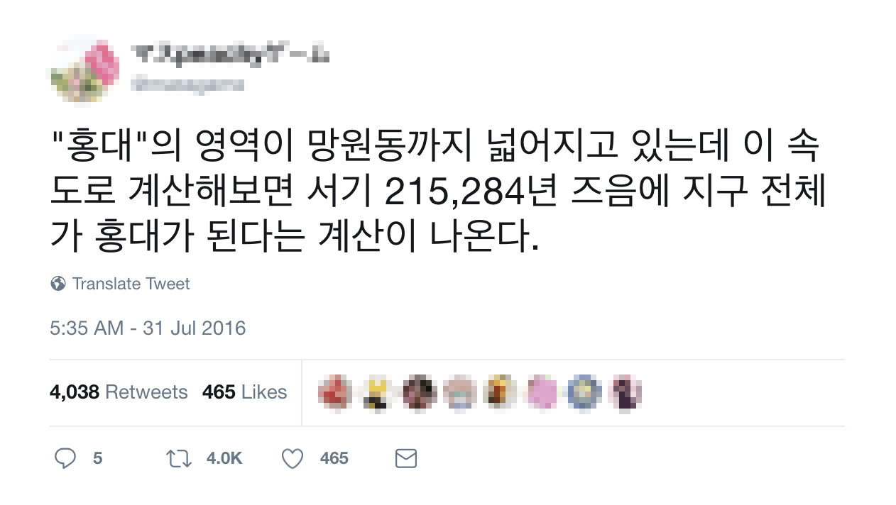

[ Introduction ]
홍대, 어디까지 가봤니?
우리는 "홍대에서 만나" 혹은 "홍대 앞에서 만나"라는 말을 자연스레 하곤 합니다. 여기서 홍대(弘大)는 ‘홍익대학교’의 줄임말이지만, 사실 홍익대학교 혹은 홍익대학교 앞에서 보자는 의미를 담고 있지는 않습니다.
앞선 맥락처럼 홍대는 굉장히 복합적인 상징성을 띕니다. 전통적으로는 젊은이들의 독특한 문화적 코드가 발전하는 지역적 매개가 되어 왔고, 현재는 수많은 외국인들에게 특유의 한국 나이트라이프를 즐길 수 있는 명소로 꼽힙니다. 또한, 인디음악과 클럽 문화를 즐길 수 있음과 동시에, 급격한 상업화의 영향으로 대형 브랜드들을 만날 수도 있습니다.
홍대만의 독특한 상징성은 문화적으로 뿐만 아니라 지리적으로도 이어집니다. 본래 홍대는 2호선 홍대입구역을 시작으로 홍익대학교 정문까지 이르는 서교동과 상수동 일대를 가리키는 말이었습니다. 하지만 과거와 달리 지금의 홍대는 서울의 서쪽 끝에 위치한 마포구의 서교동, 합정동, 상수동, 연남동, 그리고 서대문구까지도 아우르는 하나의 고유한 지역으로 자리잡았습니다.
프로젝트 소개
한 트위터 유저는, 홍대라는 독특한 상권에 대해 이런 농담을 남겼습니다.
과연 우리는 "홍대에서 만나"라는 말과 함께 어느 지역을 방문할까요? 연남동은 언제부터 홍대로 불리게 되었을까요? 데잇걸즈 E조의 프로젝트는 사람들은 과연 어디까지를 홍대라고 부르고 있을까? 라는 궁금증에서 시작되었습니다. 그리고 저희는 단순한 추측 에 그치는 것이 아니라 이 공대생의 가설을 객관적이고 과학적인 방식으로 분석하여 검증해보고자 합니다.
저희의 프로젝트에서는 map data의 시각화를 통해 '홍대'의 확장성과, 이를 넘어 과거의 데이터를 계층적으로 구성함으로써 '홍대'에 관심있는 누구에게나 새로운 인사이트를 제공하고자 합니다.
[ Process ]
데이터 수집
크롤링 데이터량
24000 개
크롤링 좌표정보
9711 개
크롤링 카페의 수
2134 개
홍대의 상권은 2000년 대 초반부터 꾸준히 발전되었지만, 홍대 젠트리피케이션 현상이 두드러지기 시작한 2012년 부터의 데이터를 수집하였습니다. 젠트리피케이션 현상이 상권 확장에 큰 영향을 끼친다는 다수의 연구를 참고한 것이며, 이 기간의 상권 정보를 풍부하게 얻을 수 있는 네이버 블로그의 데이터를 타겟으로 하였습니다.
네이버 블로그에는 '홍대'라는 키워드를 가진 3,645,484건(18년 9월 15일 기준)의 포스트가 있습니다. 홍대는 밥집, 술집 등 다양한 키워드와 연관되어 있으나, 다양한 업종을 아우르는 맛집을 제외한 가장 높은 빈도 수를 보이는 '카페'를 메인 검색어로 선택하였습니다.
2012년 3분기부터 2018년 2분기까지 각 분기별로 관련도순 1000개의 포스트를 크롤링 하였으며, 게시물에 포함된 좌표 정보를 따로 뽑아낸 결과 총 9711개를 얻어낼 수 있었습니다.
[ Analysis ]
지도 데이터 시각화

위 지도는 2012년 3분기부터 2018년 2분기까지, 총 6개년의 분기에 따른 전체적인 카페 분포 양상을 보여줍니다. 저희는 얻어낸 좌표 정보를 지도상 하나의 점으로 나타냈으며, 카페가 언급된 횟수가 많을수록 점의 반경이 늘어납니다.
이는 홍대의 핵심 지역의 변화를 반영하며, 우리는 기존의 홍대입구역에서 홍익대학교 정문까지의 거리에서 더 넓은 범위로 점차 확대됨을 확인할 수 있습니다. 그 중에서도 우리는 홍익대학교를 둘러싸는 2개의 역인 합정역과 상수역, 연남동, 그리고 경의선 책거리를 기준으로 ‘홍대’의 지역 확장성을 살펴보겠습니다.
참고로 2016년에는 홍대의 전체적인 상권이 잠시 축소되는 것을 볼 수 있는데, 이는 그 해 홍대의 유흥업이 신한카드 결제액 기준 -36%의 역성장을 보인 것과 연관지을 수 있을 것으로 보입니다. 젊은이들의 유흥지로 손꼽히던 홍대 유흥업의 부진은 전반적인 상권에 영향을 끼쳤을 것으로 예상되며, 이후 업종의 자연스러운 변화로 카페들의 성장이 더욱 확연히 드러난 것으로 보입니다.
[ Insight ]
홍대 거리(street)별 특징적 확장 경향
홍익대학교를 둘러싸는 2개의 역인 합정역과 상수역, 연남동, 그리고 경의선 책거리를 기준으로 ‘홍대’ 지역 확장성을 살펴보겠습니다. 이하 지도는 카페의 언급 빈도 보다 위치의 경향성을 더 잘 드러내기 위해 log scale을 활용했습니다. 점의 반경 차이를 줄여줌으로써 우리는 보다 객관적으로 지역의 확장 범위를 확인할 수 있습니다.
1. 합정역과 상수역 살펴보기
과거의 홍대는 1984년 홍대입구역의 개통과 함께 당시 유흥의 집중지였던 신촌의 유동인구가 집중단속을 피해 넘어오며 발전했습니다. 초기 홍대의 인디 문화(특히 음악)가 자리잡으며, 2000년 대 이후에는 월드컵의 영향으로 상암동 월드컵 경기장과 가까웠던 홍대는 외국인들까지 쉽게 찾는 명소가 되었습니다.
하지만 이로 인해 홍익대학교 인근 서교동은 상가 임대료가 폭등하였습니다. 이에 젊은 예술가들과 자영업자들이 비교적 저렴한 상수동과 합정동으로 이동하면서 자연스럽게 '홍대'가 확장된 셈입니다. 가난한 예술가들이 홍대의 서부 개척자의 역할을 한 것으로 볼 수 있습니다.

우리는 2012년 부터 2018년까지 꾸준히 상권을 차지하고 있는 합정역과 상수역 사이의 카페들을 통해, 이 곳이 가장 먼저 기존의 홍대에서 확장되어 나온 장소라는 것을 알 수 있습니다. 이 곳은 상대적으로 젠트리피케이션이 더뎌 골목골목 괜찮은 음식점들과 분위기 좋은 카페, 바 등이 많아, 홍대 중심부와는 또 다른 매력을 느낄 수 있습니다.
2. 연남동 살펴보기
2010년 초반까지만 해도 연남동은 연희동의 일부라는 인식이 강했습니다. 7, 80년 대에 지어진 연립주택과 가성비로 유명한 기사식당, 화교들이 운영하는 중국 음식 등이 있는 동네로만 알려져 있었기에 연희동의 높은 인지도에 가려져 있었던 것입니다.
하지만 연남동은 홍대의 상업화에 밀려나온 '홍대 유민'들이 2013년 경 부터 차츰 유입되기 시작하며 하나의 동네로 자리잡게 됩니다. 이는 경의선 숲길 중 홍대입구역 근처부터 가좌역 인근 연남동 구간이 2015년 6월 개방되는 것과 맞물려, 급격한 홍대 상권의 연남동으로의 확장을 이끌어 냈습니다.

우리는 홍대의 전체적인 상권 축소가 일어났던 2016년을 제외하고, 2015년 3분기부터 꾸준한 연남동의 상권 성장을 확인할 수 있습니다. 미국의 맨해튼 센트럴파크와 닮았다 하여 연트럴파크라는 별칭을 가지고 있는 경의선 숲길의 공원은, 번잡한 홍대의 분위기와는 달리 도심 속 여유를 즐기려는 젊은이들이 많이 찾고 있습니다.
3. 책거리 살펴보기
2016년 5월, 경의선 숲길 중 연남동에 이어 동교동(와우교) 구간이 개방되었습니다. 이후 2016년 10월, 마포구의 복합문화공간 사업의 일환으로 홍대입구역 6번 출구부터 시작하는 경의선 책거리가 조성 되었습니다. 홍대 책거리는 마포구의 독서문화와 출판산업의 장려를 위해 조성된 책 테마 공간입니다. 조성 1년 만에 40만 명이 방문한 새로운 관광 명소로써, 경의선 책거리는 최근 홍대의 새로운 문화를 이끌고 있습니다.

우리는 2017년부터 2018년에 걸쳐 신촌로와 서강로9길 사이를 따라 점차 밀집되어가는 카페 분포를 확인할 수 있습니다. 경의선 책거리를 따라 책과 관련된 다양한 행사를 유치 중인 만큼 이후의 뚜렷한 성장세가 기대되는 지역입니다.
[ Insight ]
1. 최근 6년간 홍대에서 가장 HOT했던 카페 Top 9
그렇다면, 전체 6년 간의 포스트들을 토대로 보았을 때, 어떤 카페들이 '홍대'의 중심이었을까요?


2. 연도별 카페 순위 TOP 10


[ Summary ]
마무리
실제 데이터를 통해 알아본 결과, 우리는 '수 십년 내에 전세계가 홍대가 될 것이다'라는 농담을 조금은 진담처럼 말할 수 있게 되었습니다. 홍대 카페의 밀집도가 높을수록 푸른색으로 채워지도록 표현한 heatmap을 통해서 우리는 이를 보다 확실하게 확인할 수 있습니다.

본래 홍익대학교 인근을 의미했던 ‘홍대’는 특히 연남동 방향으로 강한 signal을 보이고 있고 상수동과 합정동 방향으로도 꾸준히 확장되고 있습니다. 하나의 법정동에서 다섯개의 법정동을 아우르게 된 홍대는 망원동, 성산동, 연희동 등의 지역과도 맞닿아 있어 이후의 확장성을 기대하게 합니다.
우리는 이 프로젝트를 통해 홍대 상권의 변화가 빠른 특성을 파악할 수 있었습니다. 사실 이러한 현상을 단순한 상권의 확장으로 볼 수도 있습니다. 하지만 해당 지역들이 홍대와 차별성을 띄기 보다는 하나의 문화를 공유하고 있다는 점에서, 우리는 이를 홍대의 확장이라고 표현할 수 있다고 생각합니다. 과연 몇년 후에는 어디까지를 홍대라고 말할 수 있을까요? 언젠가 행정 구역도 특정 지명도 아닌 이 독특한 대한민국의 명소 "홍대”가 지명이 될 수도 있겠구나라는 심심한 고민을 던집니다.
Future Work
- ‘홍대’ 연관 검색어 중 카페 이외에도 맛집, 버스킹, 클럽, 데이트 등등의 키워드가 존재하므로 ‘홍대’의 확장성을 보다 포괄적인 관점에서 해석할 수 있는 가능성이 존재합니다.
- ‘홍대’의 상권의 임대료 경향과 확장성 간의 유의미한 관계가 존재하는지를 분석해 볼 수 있습니다. 이를 통해 상권이 유지되기 위한 조건을 제시할 수 있습니다.
Workflow tools
- Python
- Slack to communicate
- Github to collaborate
Contributors
질문 폭탄을 즐겁게 받아 주신 애란 선생님과 배로 선생님,
우리를 위해 늘 애써주신 김영웅님 외 데잇걸즈 운영진분들,
함께 나아가는 데잇걸즈 2 일동,
그리고 아픈데도 불구하고 함께해준 홍다영 님